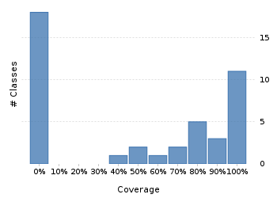
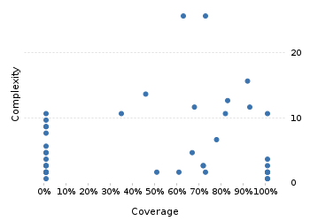

Jenkins Monitor 0.1.4-SNAPSHOT_jdk19
Project overview
Code coverage 58 classes, 422 / 951 elements
0.4437434444,4%
Test results 42 / 42 tests 3,28 secs
1.0100%
Code metrics
120
632
199
58
48
6
3.462
1.763
296
0,47
3,18
3,43
9,67
1,49
Class Coverage Distribution

Class Complexity

Coverage tree map
Generating Coverage Tree Map. Please wait...

Top 20 project risks
Zugangsdatensammler
BasicAuthDaten
JobBeschreibung
JobAbfragedaten
JobAbfrage
Configuration
SharedListSelectionHandler
ImageGenerator
ConfigurationMockEmpty
JavaSystemWrapper
Statusfenster
ConfigurationMockNoExisting
JenkinsRESTClient
JobStatusZeileOben
ConfigurationMockValidTwoJobs
JobStatusZeileUnten
NetworkHelper
JobStatusBeschreibungen
JobStatusDarstellungen
AbstractJobBeschreibungen
Most complex packages
| 1. | 0.7535211475,4% |
com.github.funthomas424242.jenkinsmonitor.jenkins 102 |
| 2. | 0.1413043414,1% |
com.github.funthomas424242.jenkinsmonitor.gui 89 |
| 3. | 0.732620373,3% |
com.github.funthomas424242.jenkinsmonitor.config 62 |
| 4. | 0.2878787828,8% |
com.github.funthomas424242.jenkinsmonitor.etc 23 |
| 5. | 0.00% |
com.github.funthomas424242.jenkinsmonitor.logstash 12 |
Most complex classes
| 1. | 0.780487878% |
Configuration 22 |
| 2. | 0.9107142791,1% |
Zugangsdatensammler 16 |
| 3. | 0.7192982471,9% |
JobAbfrage 16 |
| 4. | 0.4615384646,2% |
ImageGenerator 14 |
| 5. | 0.810810881,1% |
JobAbfragedaten 14 |